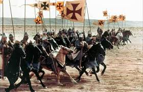
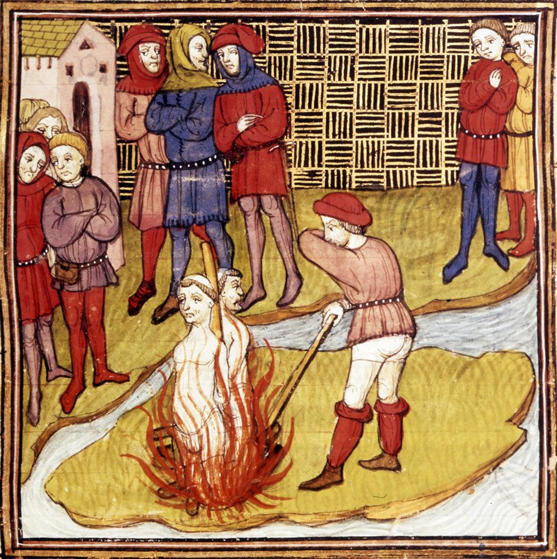
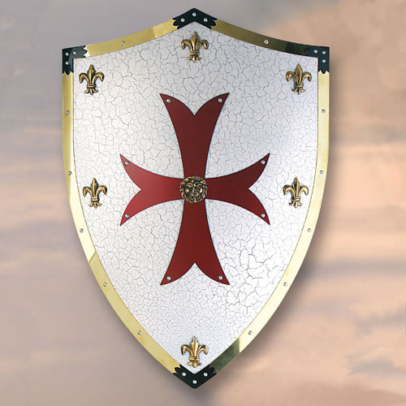
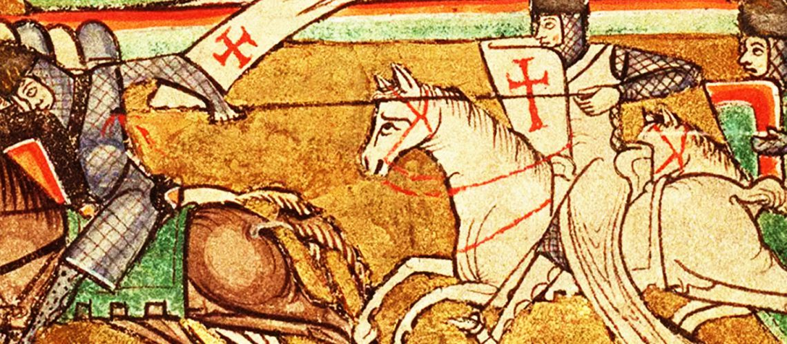

Caballeros Templarios
Orígenes e Historia
La Orden de los Pobres Caballeros de Cristo del Templo de Salomón, conocidos como los Caballeros Templarios, fue fundada alrededor del año 1119 por Hugo de Payens y otros ocho caballeros franceses, poco después de la Primera Cruzada. Su objetivo original era proteger a los peregrinos cristianos en Tierra Santa, especialmente en el camino hacia Jerusalén.
Reconocida oficialmente por la Iglesia en el Concilio de Troyes en 1129, la orden creció rápidamente en poder e influencia. Recibieron donaciones de tierras, castillos y riquezas a lo largo de Europa, y desarrollaron una red financiera que muchos consideran precursora de la banca moderna.
Durante los siglos XII y XIII, los templarios participaron activamente en las Cruzadas. Sin embargo, tras la pérdida de Tierra Santa y por motivos políticos y económicos, la orden cayó en desgracia. En 1307, por orden del rey Felipe IV de Francia y con la colaboración del papa Clemente V, muchos templarios fueron arrestados, torturados y ejecutados.
La orden fue disuelta oficialmente en 1312 por el papa, pero su legado ha perdurado en la cultura popular, la simbología esotérica y múltiples organizaciones posteriores que afirman inspirarse en su tradición.
Símbolos y Emblemas
Los templarios son reconocidos por su distintivo manto blanco con una cruz roja patada, símbolo de sacrificio y pureza. Su escudo y estandartes llevaban también esta cruz como emblema central.

Otro símbolo presente en representaciones artísticas es el caballero templario en combate, que encarna el ideal del soldado-monje.
Estructura y Jerarquía
La orden estaba jerárquicamente organizada y regida por una estricta regla monástica basada en la Regla de San Benito. Su estructura incluía:
- Gran Maestre: Líder supremo de la orden, responsable de las decisiones militares y administrativas.
- Senescal: Segundo al mando, administrador general.
- Mariscal: Encargado del armamento y la logística militar.
- Comendadores: Gobernaban casas templarias y territorios.
- Caballeros y Sargentos: Soldados de distintos rangos.
Personajes Clave
- Hugo de Payens: Cofundador y primer Gran Maestre de la orden.
- Jacques de Molay: Último Gran Maestre, quemado en la hoguera en 1314 en París.
- Bernardo de Claraval: Monje cisterciense que escribió la regla de la orden y promovió su aprobación papal.
- Felipe IV de Francia: Monarca que orquestó la caída de los templarios por razones políticas y financieras.